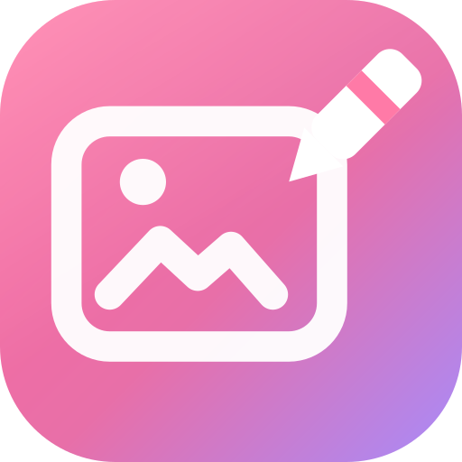

01 / DISCOVER
发现画师
从小红书画师推荐类笔记中整理署名与作品链接，快速建立候选清单。

Artist Atlas画 师 图 鉴从画师推荐笔记中发现创作者，把作品与署名整理成自己的参考图鉴。少一点散落的收藏，多一点清晰的脉络。
Artist Atlas 是一款运行在 Windows 本机的画师发现与作品整理工具，采集、核验和浏览都围绕你的个人资料库展开。
从小红书画师推荐类笔记中整理署名与作品链接，快速建立候选清单。
按画师整理作品，合并重复记录、修正名称，也可以调整图片归属。
可选连接 Danbooru 与 SauceNAO。证据不足时保留候选，交由你确认。
在线页面用于介绍项目和阅读文档。采集工作台需要本机 Python、Chrome/Chromium 与 Playwright。
克隆仓库，或从 GitHub 下载源码 ZIP。
安装 Python 依赖与 Playwright 浏览器组件。
在项目目录运行工作台脚本，在本机浏览器中使用。
查看完整使用说明、隐私提示与常见问题。